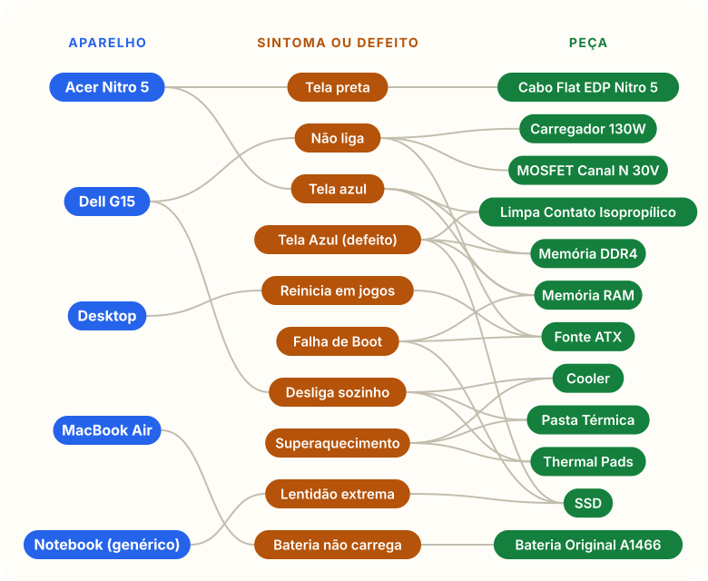

Antigravity e Gemini
Ajudante de código
Um editor com assistente de IA. Você constrói o projeto pedindo a ele.
Capacitação prática em tecnologia
Uma oficina de computadores de mentirinha. Você cria a sua pasta, abre no Antigravity e constrói o projeto com a ajuda do Gemini. Pouca leitura. Muito áudio, imagem e passo a passo.

É assim que a oficina funciona, do pedido do cliente até o serviço pronto.
No site, ele escreve o aparelho e o defeito.
Um programa recebe o chamado e dá um número.
Prioridade, causa provável e próximos passos.
Aviso no celular e comandos para dar andamento.
Ele vê o status e o laudo no site.
Seis ferramentas de verdade. Cada uma ganha um nome de oficina, para ficar fácil de lembrar.
Ajudante de código
Um editor com assistente de IA. Você constrói o projeto pedindo a ele.
Assistente que lê em voz alta
Você estuda ouvindo, sem ler páginas.
Quadro de Fichas e Ligações
Liga o defeito à peça que já deu certo.
Dupla de Especialistas
Um atendente e um técnico virtuais.
Rádio do Técnico
Chamados e avisos direto no celular.
Arquivo Digital Central
No final, guarda a sua pasta na internet. Nada se perde.

Memória da oficina
O Graphify leu os documentos de estudo e montou o grafo da oficina: 36 pontos e 66 ligações. Aqui você vê os 27 pontos que ligam aparelho, sintoma e peça. Os outros são documentos e prompts.
Escolha por onde quer entrar. Se é a primeira vez, use Começar o curso.
Três perguntas rápidas e a sua primeira tarefa. Um botão só: Continuar.
ComeçarO que a oficina faz, para que serve e o que ela não faz.
LerOs 13 passos do zero ao fim, numa lista só, com tempo e comprovante.
Abrir6 etapas curtas, com áudio, imagem e comprovante simples.
AbrirConstrua o projeto com o Gemini: um pedido pronto para cada parte.
AbrirOnde achar cada chave e senha, como guardar e como pedir ajuda ao Gemini sem mostrar o segredo.
AbrirAbra um chamado e acompanhe o laudo. Precisa da API ligada.
Abrir